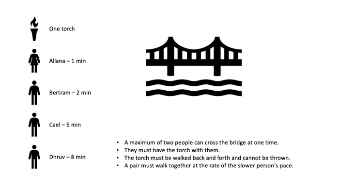

Question:
Four poeple are crossing a bridge at night, so they will need a torch--but they just have one torch that only lasts 15 minutes. Allana can cross in one minute, Bertram in two minutes, Cael in five minutes and Dhruv in eight minutes. The bridge is old and rickety, so no more than two people can cross at a time,a nd when two cross, they have to go at the slower persons' pace. How do all four people get across in 15 minutes?
Answer: